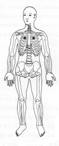
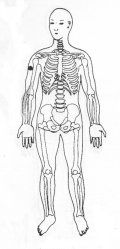

Travas de Segurança da Energia 13 - Segunda Profundidade
|
 |
TSE 13
¬ Colocar as mãos sobre o peito centímetros abaixo da clavícula correspondente TSE13. ou
Coloque as mãos nas parte superior dos braços TSE 19 altas. ®
|
 |
Notas:1 - M.d. = mão direita M.e. = mão esquerda
2 - Tocar a área indicada, com a ponta dos dedos da mão, durante
alguns minutos ou até sentir uma pulsação rítmica.
3 - Não precisamos nos preocupar em demasia com a precisão da
área indicada, pois cada trava de segurança da energia tem uma
abragência de uns sete centímetros em torno de si.